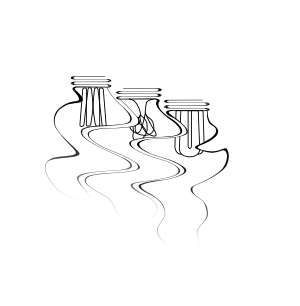

The Light Tat

Asked to design her first tattoo, Elise had fun with this project. She had been talking about getting a matching tattoo with her two sisters for a while and was presented with an excellent opportunity to bring it to life in January 2022. She was inspired by her grandfather who had recently passed away and communicates with her family through lights. The three different interiors of the lightbulbs represent Elise and her sister's personalities. Components: Illustrator